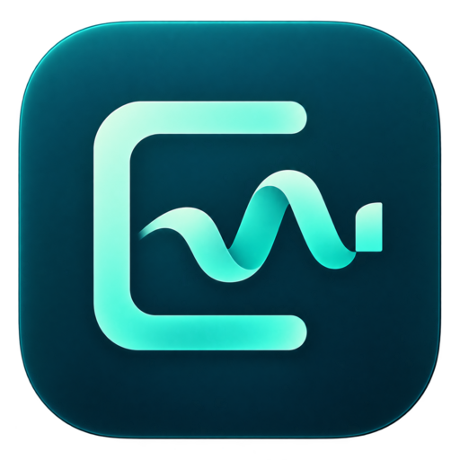

Record your screen
Add your microphone, computer audio or webcam. Pause when you need a moment.

ClearTakeRecord naturally. Review unwanted sounds. Keep the moments that matter.
Local processing · No recording uploads · Open-source application
Add your microphone, computer audio or webcam. Pause when you need a moment.
Review suggested sneezes and coughs, or select any moment yourself. Mute its sound or remove it entirely.
Trim, frame, adjust speed and add a title or captions. Export the finished take as MP4.
Checking which app downloads are available.
Apple Silicon · M1 or newer
macOS 14.2 or later
The ZIP will appear after a Mac build is published.
Prefer a DMG installer? ↗Windows 10 or 11
Intel / AMD · 64-bit
The ZIP will appear after a Windows build is published.
No. Detection suggests possible sneezes, coughs, throat clearing and sniffs after recording. It can miss sounds or flag speech. Review suggestions, or select a moment manually. Raw recordings remain unchanged.
Mute keeps the picture and silences the selected audio. Cut removes that time from both sound and picture. If you want a visible sneeze removed too, choose cut.
The app processes recordings locally. This website only checks public GitHub release information. It does not receive your recordings.
On Mac, extract the ZIP and move ClearTake.app into Applications. On Windows, extract the entire ZIP into a folder and open ClearTake.exe. Keep the other files beside it. Development builds may show operating-system trust prompts; see the release notes for signing status.
No. This website provides downloads for the desktop app. Screen recording and editing happen inside the installed application.